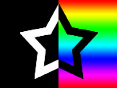

Cet article fait suite à Traitement d’images en WebGL. Si vous ne l’avez pas encore lu, je vous suggère de commencer par là.
C’est peut-être le bon moment pour répondre à la question : “Comment utiliser 2 textures ou plus ?”
C’est assez simple. Revenons quelques leçons en arrière à notre premier shader qui dessine une seule image et mettons-le à jour pour 2 images.
La première chose à faire est de modifier notre code pour pouvoir charger 2 images. Ce n’est pas vraiment une chose WebGL, c’est une chose HTML5 JavaScript, mais autant s’y attaquer. Les images sont chargées de manière asynchrone, ce qui peut demander un peu d’adaptation si vous n’avez pas commencé par la programmation web.
Il existe essentiellement 2 façons de gérer cela. Nous pourrions essayer de structurer notre code pour qu’il s’exécute sans textures et que le programme se mette à jour au fur et à mesure que les textures sont chargées. Nous garderons cette méthode pour un article ultérieur.
Dans ce cas, nous attendrons que toutes les images soient chargées avant de dessiner quoi que ce soit.
Commençons par transformer le code qui charge une image en une fonction. C’est assez simple.
Elle crée un nouvel objet Image, définit l’URL à charger et définit un callback qui sera
appelé lorsque l’image aura fini de se charger.
function loadImage (url, callback) {
var image = new Image();
image.src = url;
image.onload = callback;
return image;
}
Maintenant créons une fonction qui charge un tableau d’URLs et génère un tableau d’images.
D’abord, nous définissons imagesToLoad au nombre d’images que nous allons charger. Ensuite, nous créons
le callback que nous passons à loadImage qui décrémente imagesToLoad. Quand imagesToLoad atteint
0, toutes les images ont été chargées et nous passons le tableau d’images à un callback.
function loadImages(urls, callback) {
var images = [];
var imagesToLoad = urls.length;
// Appelé chaque fois qu'une image a fini de se charger.
var onImageLoad = function() {
--imagesToLoad;
// Si toutes les images sont chargées, appelle le callback.
if (imagesToLoad === 0) {
callback(images);
}
};
for (var ii = 0; ii < imagesToLoad; ++ii) {
var image = loadImage(urls[ii], onImageLoad);
images.push(image);
}
}
Maintenant nous appelons loadImages comme ceci
function main() {
loadImages([
"resources/leaves.jpg",
"resources/star.jpg",
], render);
}
Ensuite, nous modifions le shader pour utiliser 2 textures. Dans ce cas, nous allons multiplier 1 texture par l’autre.
#version 300 es
precision highp float;
// nos textures
*uniform sampler2D u_image0;
*uniform sampler2D u_image1;
// les texCoords passées depuis le vertex shader.
in vec2 v_texCoord;
// nous devons déclarer une sortie pour le fragment shader
out vec2 outColor;
void main() {
* vec4 color0 = texture2D(u_image0, v_texCoord);
* vec4 color1 = texture2D(u_image1, v_texCoord);
* outColor = color0 * color1;
}
Nous devons créer 2 objets de texture WebGL.
// crée 2 textures
var textures = [];
for (var ii = 0; ii < 2; ++ii) {
var texture = gl.createTexture();
gl.bindTexture(gl.TEXTURE_2D, texture);
// Définit les paramètres pour qu'on n'ait pas besoin de mips
gl.texParameteri(gl.TEXTURE_2D, gl.TEXTURE_WRAP_S, gl.CLAMP_TO_EDGE);
gl.texParameteri(gl.TEXTURE_2D, gl.TEXTURE_WRAP_T, gl.CLAMP_TO_EDGE);
gl.texParameteri(gl.TEXTURE_2D, gl.TEXTURE_MIN_FILTER, gl.NEAREST);
gl.texParameteri(gl.TEXTURE_2D, gl.TEXTURE_MAG_FILTER, gl.NEAREST);
// Télécharge l'image dans la texture.
var mipLevel = 0; // le plus grand mip
var internalFormat = gl.RGBA; // format qu'on veut dans la texture
var srcFormat = gl.RGBA; // format des données qu'on fournit
var srcType = gl.UNSIGNED_BYTE; // type des données qu'on fournit
gl.texImage2D(gl.TEXTURE_2D,
mipLevel,
internalFormat,
srcFormat,
srcType,
images[ii]);
// ajoute la texture au tableau de textures.
textures.push(texture);
}
WebGL a quelque chose appelé “unités de texture”. Vous pouvez le voir comme un tableau de références à des textures. Vous indiquez au shader quelle unité de texture utiliser pour chaque sampler.
// recherche les emplacements des samplers.
var u_image0Location = gl.getUniformLocation(program, "u_image0");
var u_image1Location = gl.getUniformLocation(program, "u_image1");
...
// définit les unités de texture avec lesquelles effectuer le rendu.
gl.uniform1i(u_image0Location, 0); // unité de texture 0
gl.uniform1i(u_image1Location, 1); // unité de texture 1
Ensuite, nous devons lier une texture à chacune de ces unités de texture.
// Configure chaque unité de texture pour utiliser une texture particulière.
gl.activeTexture(gl.TEXTURE0);
gl.bindTexture(gl.TEXTURE_2D, textures[0]);
gl.activeTexture(gl.TEXTURE1);
gl.bindTexture(gl.TEXTURE_2D, textures[1]);
Les 2 images que nous chargeons ressemblent à ceci
|  |
Et voici le résultat si nous les multiplions ensemble en utilisant WebGL.
Quelques points que je devrais aborder.
La façon simple de penser aux unités de texture est quelque chose comme ceci : Toutes les fonctions de texture travaillent sur “l’unité de texture active”. “L’unité de texture active” est juste une variable globale qui est l’index de l’unité de texture avec laquelle vous voulez travailler. Chaque unité de texture dans WebGL2 a 4 cibles. La cible TEXTURE_2D, la cible TEXTURE_3D, la cible TEXTURE_2D_ARRAY et la cible TEXTURE_CUBE_MAP. Chaque fonction de texture travaille avec la cible spécifiée sur l’unité de texture active actuelle. Si vous deviez implémenter WebGL en JavaScript, cela ressemblerait à quelque chose comme ceci
var getContext = function() {
var textureUnits = [
{ TEXTURE_2D: null, TEXTURE_3D: null, TEXTURE_2D_ARRAY: null, TEXTURE_CUBE_MAP: null, },
{ TEXTURE_2D: null, TEXTURE_3D: null, TEXTURE_2D_ARRAY: null, TEXTURE_CUBE_MAP: null, },
{ TEXTURE_2D: null, TEXTURE_3D: null, TEXTURE_2D_ARRAY: null, TEXTURE_CUBE_MAP: null, },
{ TEXTURE_2D: null, TEXTURE_3D: null, TEXTURE_2D_ARRAY: null, TEXTURE_CUBE_MAP: null, },
{ TEXTURE_2D: null, TEXTURE_3D: null, TEXTURE_2D_ARRAY: null, TEXTURE_CUBE_MAP: null, },
{ TEXTURE_2D: null, TEXTURE_3D: null, TEXTURE_2D_ARRAY: null, TEXTURE_CUBE_MAP: null, },
{ TEXTURE_2D: null, TEXTURE_3D: null, TEXTURE_2D_ARRAY: null, TEXTURE_CUBE_MAP: null, },
{ TEXTURE_2D: null, TEXTURE_3D: null, TEXTURE_2D_ARRAY: null, TEXTURE_CUBE_MAP: null, },
];
var activeTextureUnit = 0;
var activeTexture = function(unit) {
// convertit l'enum de l'unité en index.
var index = unit - gl.TEXTURE0;
// Définit l'unité de texture active
activeTextureUnit = index;
};
var bindTexture = function(target, texture) {
// Définit la texture pour la cible de l'unité de texture active.
textureUnits[activeTextureUnit][target] = texture;
};
var texImage2D = function(target, ...args) {
// Appelle texImage2D sur la texture actuelle sur l'unité de texture active
var texture = textureUnits[activeTextureUnit][target];
texture.image2D(...args);
};
var texImage3D = function(target, ...args) {
// Appelle texImage3D sur la texture actuelle sur l'unité de texture active
var texture = textureUnits[activeTextureUnit][target];
texture.image3D(...args);
};
// renvoie l'API WebGL
return {
activeTexture: activeTexture,
bindTexture: bindTexture,
texImage2D: texImage2D,
texImage3D: texImage3D,
};
};
Les shaders prennent des index dans les unités de texture. Espérons que cela rende ces 2 lignes plus claires.
gl.uniform1i(u_image0Location, 0); // unité de texture 0
gl.uniform1i(u_image1Location, 1); // unité de texture 1
Une chose à savoir : lors de la définition des uniforms, vous utilisez des index pour les unités de texture, mais lors de l’appel à gl.activeTexture, vous devez passer des constantes spéciales gl.TEXTURE0, gl.TEXTURE1, etc. Heureusement, les constantes sont consécutives, donc au lieu de ceci
gl.activeTexture(gl.TEXTURE0);
gl.bindTexture(gl.TEXTURE_2D, textures[0]);
gl.activeTexture(gl.TEXTURE1);
gl.bindTexture(gl.TEXTURE_2D, textures[1]);
Nous aurions pu faire ceci
gl.activeTexture(gl.TEXTURE0 + 0);
gl.bindTexture(gl.TEXTURE_2D, textures[0]);
gl.activeTexture(gl.TEXTURE0 + 1);
gl.bindTexture(gl.TEXTURE_2D, textures[1]);
ou ceci
for (var ii = 0; ii < 2; ++ii) {
gl.activeTexture(gl.TEXTURE0 + ii);
gl.bindTexture(gl.TEXTURE_2D, textures[ii]);
}
J’espère que cette petite étape aide à expliquer comment utiliser plusieurs textures dans un seul appel de dessin en WebGL.